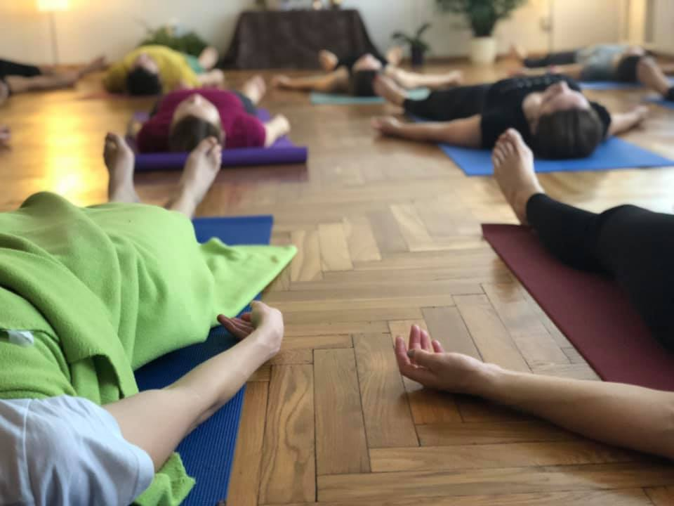
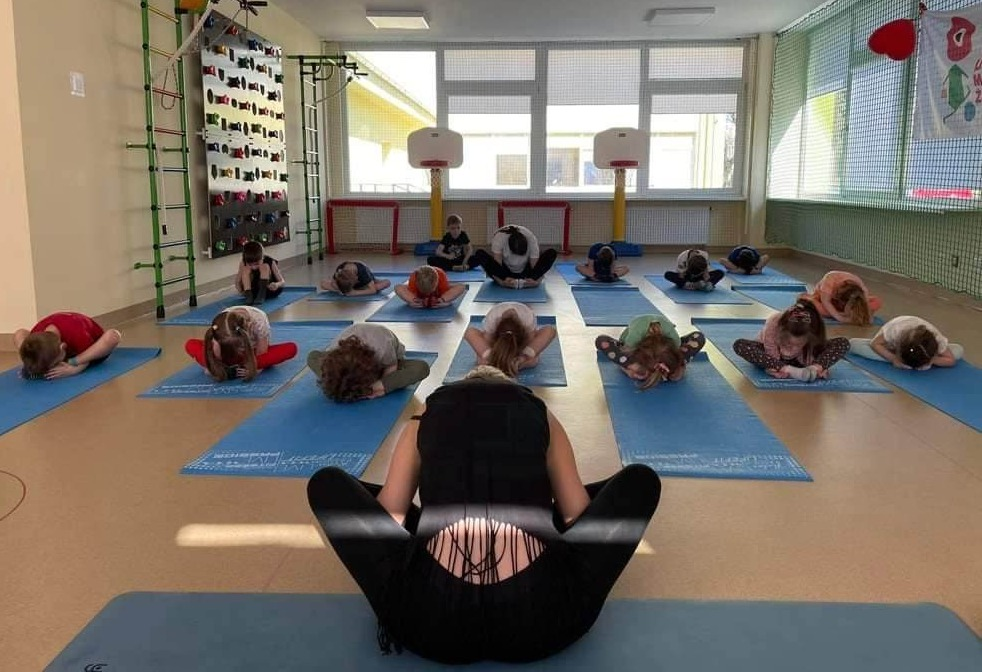

Renata Ma – daugiau nei mokytoja
Renata – sertifikuota jogos instruktorė, kurios balsas, švelnumas ir gilus dėmesys kiekvienam suteikia saugumo, pasitikėjimo ir įkvėpimo. Jos vedamos praktikos – tai ne tik fizinis judesys, bet ir emocinė terapija, gilaus ryšio su savimi paieška.
Hatha & Yin Joga
Hatha Joga – tai sąmoningas judesys, kvėpavimas ir kūno stiprinimas. Renatos vedami Hatha užsiėmimai padės:
- Sustiprinti raumenis
- Pagerinti laikyseną ir lankstumą
- Išmokti sąmoningo kvėpavimo
- Atrasti gilų dėmesingumą sau
Yin Joga – tai kvietimas į tylą, į gilesnius kūno ir emocijų sluoksnius. Ši lėta, bet nepaprastai gili praktika:
- Atpalaiduoja giliausius audinius
- Mažina įtampą ir nerimą
- Gerina sąnarių mobilumą
- Skatina gilų vidinį nusiraminimą
 Užsisakykite Hatha & Yin jogos treniruotes
Užsisakykite Hatha & Yin jogos treniruotes
Nidra Joga
Joga Nidra – tai gilaus atsipalaidavimo ir sąmoningo poilsio praktika, dažnai vadinama „joginiu miegu“. Praktikos metu žmogus išlieka sąmoningas, pasiekdamas būseną tarp budrumo ir miego – tai leidžia atsipalaiduoti giliai, tiek kūniškai, tiek emociškai.
 Užsisakykite Nidra jogos treniruotesJuoko Joga
Juoko joga sujungia juoką be priežasties su kvėpavimo pratimais (pranayama). Sukurta gydytojo Madan Kataria, ši praktika remiasi idėja, kad kūnas neatskiria dirbtinio juoko nuo tikro – abu turi vienodą teigiamą poveikį mūsų savijautai.
 Užsisakykite Juoko jogos treniruotes
Užsisakykite Juoko jogos treniruotes
Joga vaikams
Joga vaikams – tai linksma, žaisminga praktika, padedanti vaikams lavinti dėmesingumą, pusiausvyrą, vaizduotę ir emocinę sveikatą. Ji dažnai vyksta per žaidimus, pasakas ir kūrybines užduotis, todėl ypač mėgstama mažųjų.
 Užsisakykite jogos treniruotes vaikamsJoga nėščiosioms
Joga nėščiosioms – tai specialiai nėščioms moterims pritaikyta jogos forma, kuri padeda palaikyti fizinę ir emocinę gerovę nėštumo metu. Ji skiriasi nuo įprastos jogos tuo, kad pratimai (asanos), kvėpavimo technikos ir atsipalaidavimo metodai yra saugūs bei tinkami besilaukiančiai moteriai ir vystomam vaisiui.
Užsisakykite jogos treniruotes vaikamsAtsiliepimai
Hello hello sorry we didin't get to feedback. Your techning was lovely. I loved the reference to smile at the beginning and you have such an calming voice. A lovely accent too!!!
Thank you so much Renata, you have a lovely calm quality, sorry you did not have more time, it was lovely and loved the dragon on the wall, thank you.
Labukas, labai gerai jaučuosi ir visiems artimiesiems siunciu Dievo palaimąir meilės energiją, kurią gavau jogos pratybose. Renatele, tu esi labai gera jogos Mokytoja. Dar kartą ačiū tau.
Ačiū labai už skirtą nerealų laiką! Rekomenduosiu būtinai draugams, kad susirastų jus, kai atostogaus.
Ačiū už nuostabias pamokas, dabar kai kuriuos pratimus darau rytais.
Išsivalo mintys, pagerėjo bendra sveikatos būklė. Visada po senso būna puiki nuotaika. Ačiū kad esat.